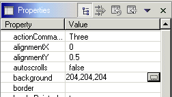
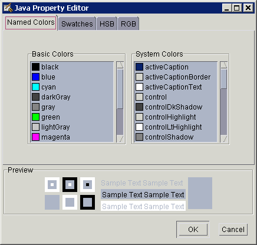

Property editors are used when an additional window is required to let you enter the property value. An example of this is color. To use a property editor, select the value column of the property. Then select the editor's 'open' button.

When you press the 'open' button, a separate window will open that lets you enter the new value. When you select the new color and press OK, the value is applied. You can use the Named Colors, Swatches, HSB, and RGB tabs to further specify your color preferences.

Property editors are used for properties that are typed to the classes
When you open a property editor it will be shown modally in front of Eclipse. When you close it Eclipse will become active again. For all of the property editors listed above, except for the Icon editor, the editor is actually run in a separate Java TM virtual machine to Eclipse. This separate virtual machine is what allows different Java runtime environments to be specified for each Java project that has their own Java build paths. There are some circumstances when after opening the property editor on the virtual machine running the Java beans, it does not appear in front of the Eclipse window. If this occurs you can select the property editor on the task bar and use the restore menu option to make it visible.
If you are developing your own Java bean and wish to control how its properties are edited using the Properties view, see the section on updating properties.
A 'this' part will be created on the canvas for a class that contains properties (inherited or not). If you add properties, you will need to save the class, close it, and reopen it for the new attributes to be reflected.
A 'uXXXXnotation' is not supported when entering text from the property sheet. If you need to use Unicode notation or any special characters, use the source code pane.
Related concepts
Properties view
Enumerated lists
Related tasks
Testing a Java bean